Ce que je construis vraiment
Je ne crée pas juste une page jolie. Je crée une base commerciale : un site que tu peux vendre, répliquer et améliorer avec l’IA.
Je pars d'une vidéo longue de 3 h et je la transforme en support pratique : tu peux suivre, copier les prompts, vérifier chaque étape et refaire le site sans dépendre de la mémoire.
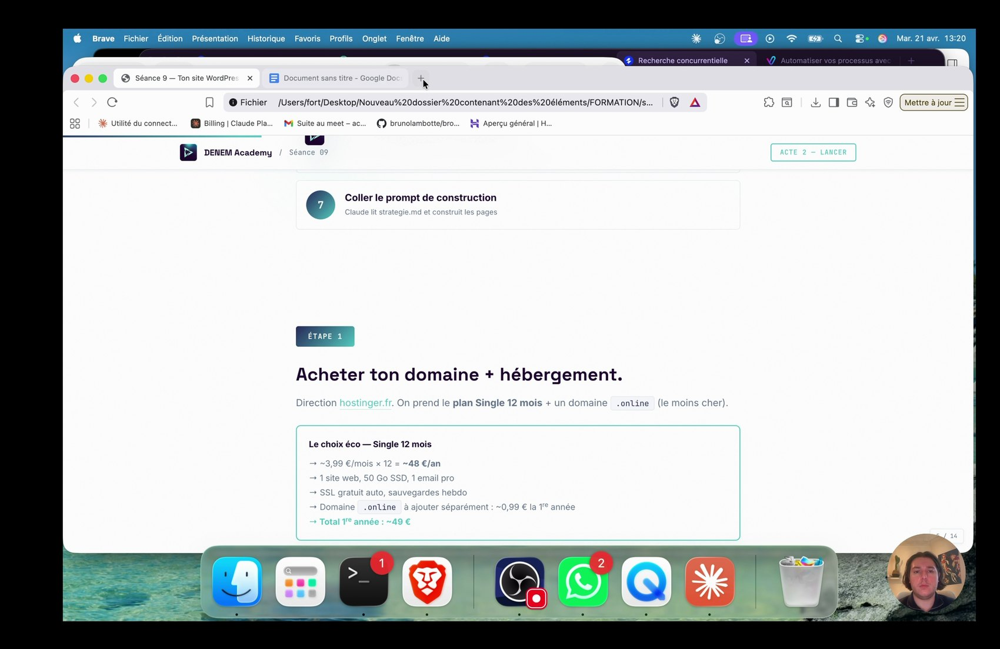
Pourquoi WordPress maintenant
WordPress + Elementor donne une base simple à piloter, bonne pour le SEO, et assez standard pour que Claude Code puisse agir dans l’interface.
Garde WordPress comme socle pratique, pas comme sujet théorique.
Tu peux ouvrir wp-admin et Elementor sans te perdre.
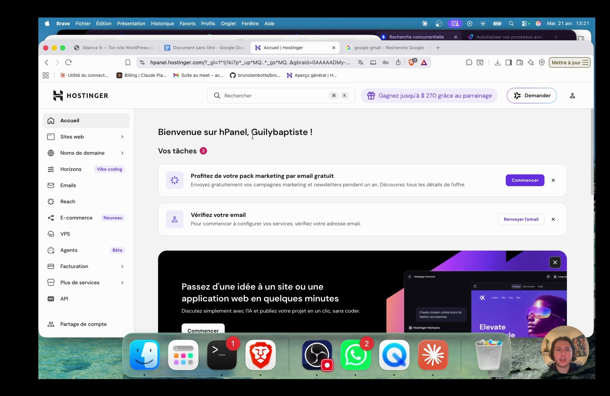
Le résultat final attendu
À la fin, je veux une page d’accueil publiée, construite section par section, responsive et cohérente avec RestIA.
Ne vise pas tout le site en une seule demande. Vise une page solide.
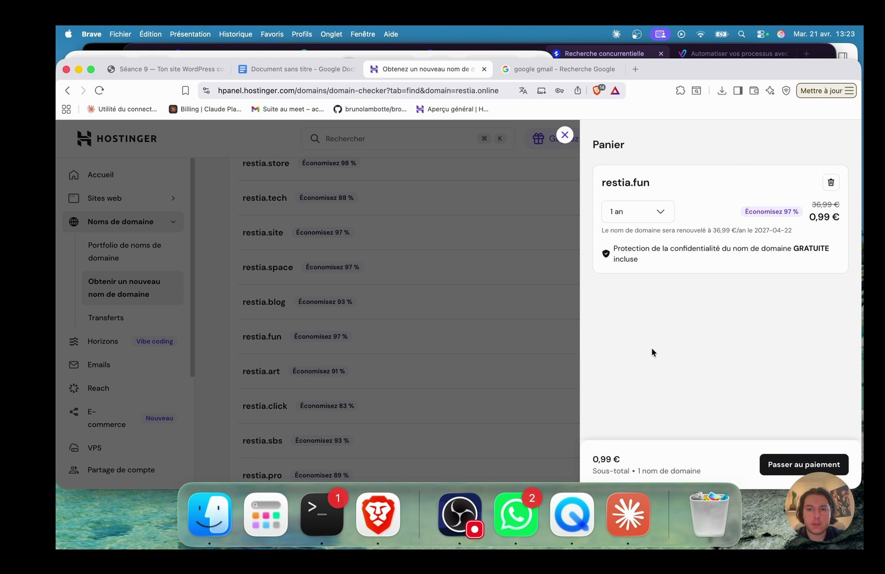
La page s’ouvre en public et se lit sur mobile.
Le service que tu peux vendre
Cette compétence devient une offre : création de site, refonte, landing page, site vitrine, page service, page locale SEO.
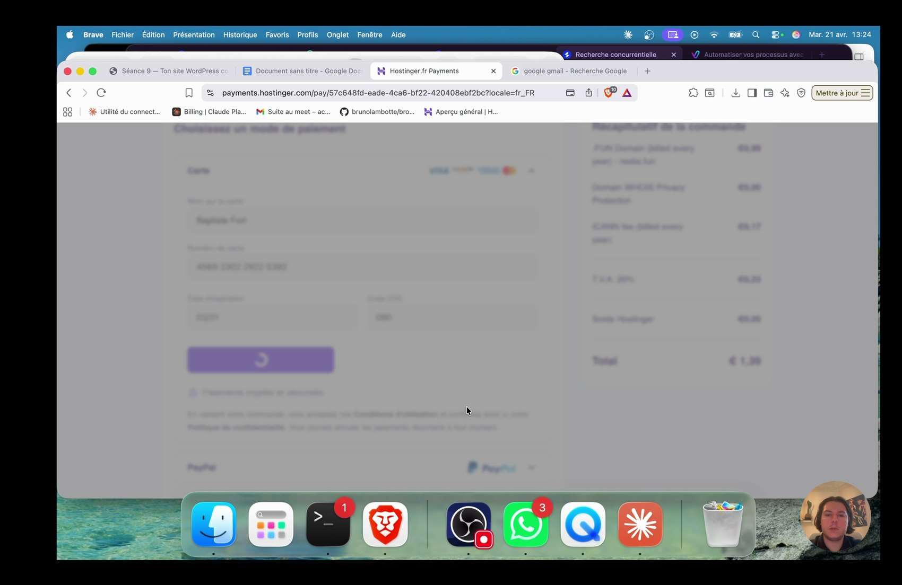
Écris déjà le livrable client : pages, sections, délais, validations.
Tu peux proposer un prix sans vendre seulement du temps.
La logique de la séance
Je prépare le terrain, je connecte les outils, puis je fais travailler Claude Code section par section dans Elementor.
Respecte l’ordre : hébergement, WordPress, Elementor, MCP, page, prompt.
Chaque outil a une raison claire.
Pourquoi section par section
Une page entière d’un coup part vite dans tous les sens. Une section, c’est contrôlable, corrigeable et vérifiable.
Ne lance jamais “fais-moi tout le site” au début.
Tu peux corriger sans casser le reste.
[Image #X]
Voici la prochaine section.
Reprends exactement le même process : extraction source, plan, construction Elementor, vérification desktop/tablette/mobile, sauvegarde, puis mini compte-rendu.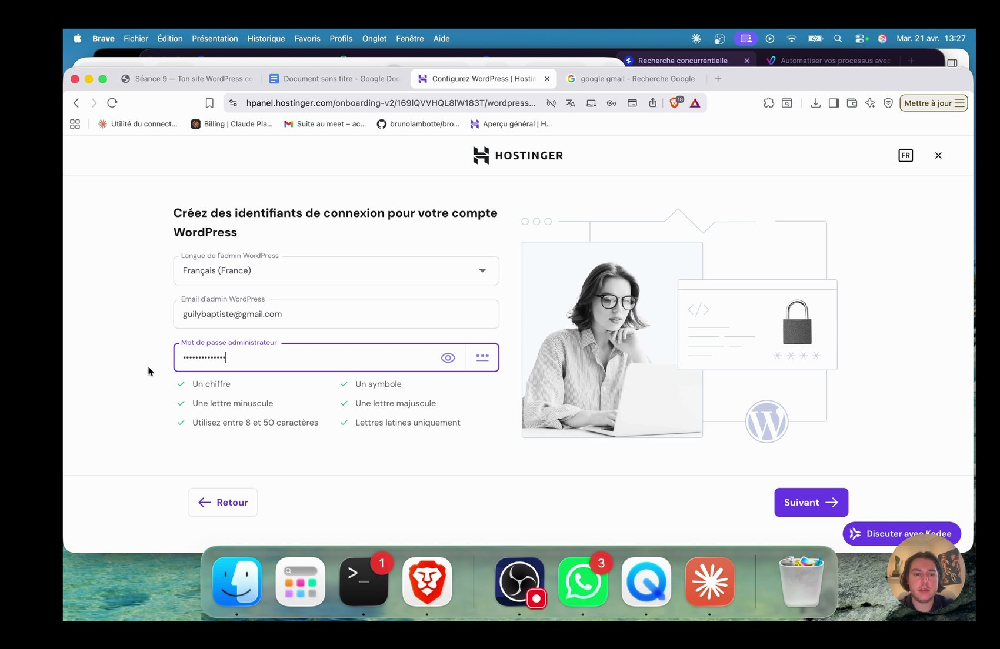
Ce que tu dois garder sous la main
Domaine, accès WordPress, dossier Elementor, URL source, URL Elementor, URL preview, capture de section, audit SEO.
Prépare ces éléments avant de demander à Claude de construire.
Tu ne perds pas 10 minutes à chaque prompt.
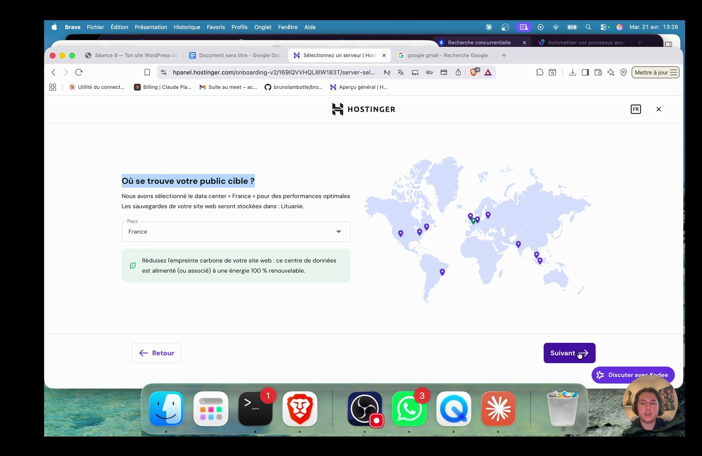
La vraie compétence IA
Le sujet n’est pas Elementor. Le sujet est de piloter un agent avec un contexte clair, des captures, des règles et une boucle de vérification.
| Point | Décision | Contrôle |
|---|---|---|
| Objectif | Formule la tâche comme un système, pas comme une demande vague. | Claude sait quoi faire sans inventer. |
| Risque | Aller trop vite | Revenir à une validation observable |
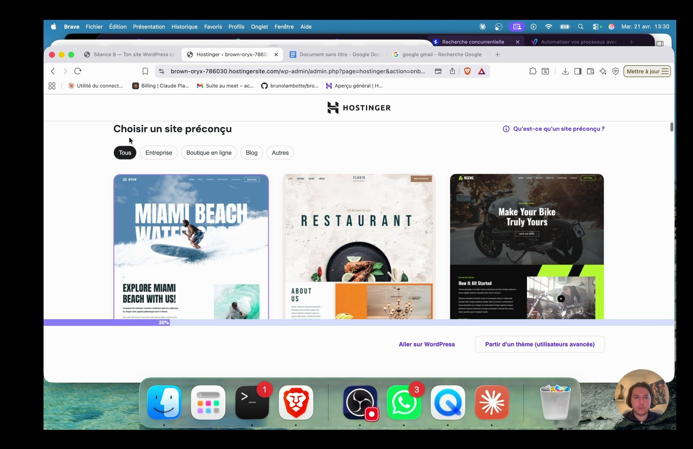
Le piège du débutant
Le piège, c’est de confondre vitesse et résultat. Si tu vas trop vite, tu obtiens une page bancale et tu dois tout reprendre.
Ne saute pas cette vérification. Si ce point est flou, la suite va coûter plus cher en corrections.
Valide une section avant de passer à la suivante.
Tu gardes une page stable.
# Installer Claude Code si besoin
node -v
npm -v
npm install -g @anthropic-ai/claude-code
claude --version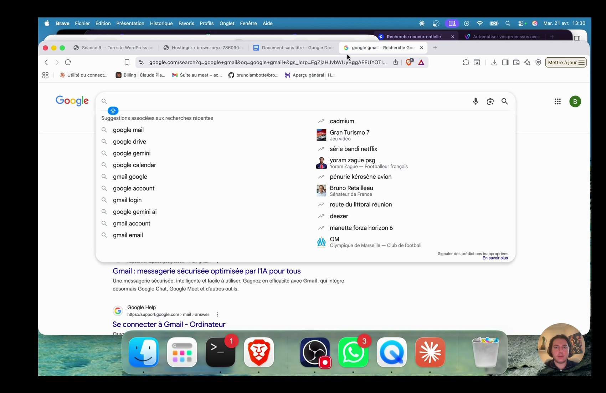
Mini récap de départ
Je veux un site WordPress, avec Elementor, piloté par Claude Code, à partir d’un site d’inspiration et adapté à mon business.
Une action vague, un outil ouvert, et beaucoup d'incertitude.
Le fil rouge est clair.
Note cette phrase dans ton QG.
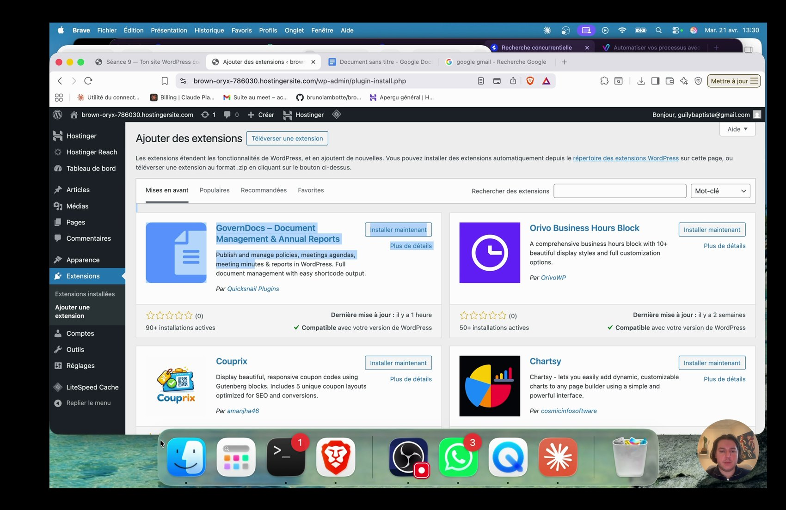
Chercher Hostinger
Je pars d’une recherche simple et je vais sur le site officiel. Le but est d’éviter les faux liens, les comparateurs inutiles et les offres parasites.
- Je prépare le contexte.
- Je lance une action précise.
- Je vérifie dans l'interface réelle.
- Je corrige seulement ce qui bloque.
Clique uniquement sur le résultat officiel ou tape directement hostinger.fr.
Tu arrives sur une page Hostinger fiable.
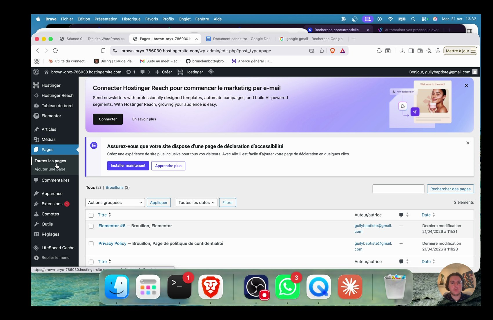
Comprendre domaine + hébergement
Le domaine est l’adresse. L’hébergement est l’endroit où tourne le site. Les deux doivent être liés pour que WordPress soit accessible.
Si tu ne peux pas expliquer cette étape en une phrase, reviens au dernier écran stable et vérifie l'URL, l'outil ouvert et l'objectif de la section.
Ne paye pas seulement un domaine si tu veux installer WordPress.
Tu sais ce que tu achètes.
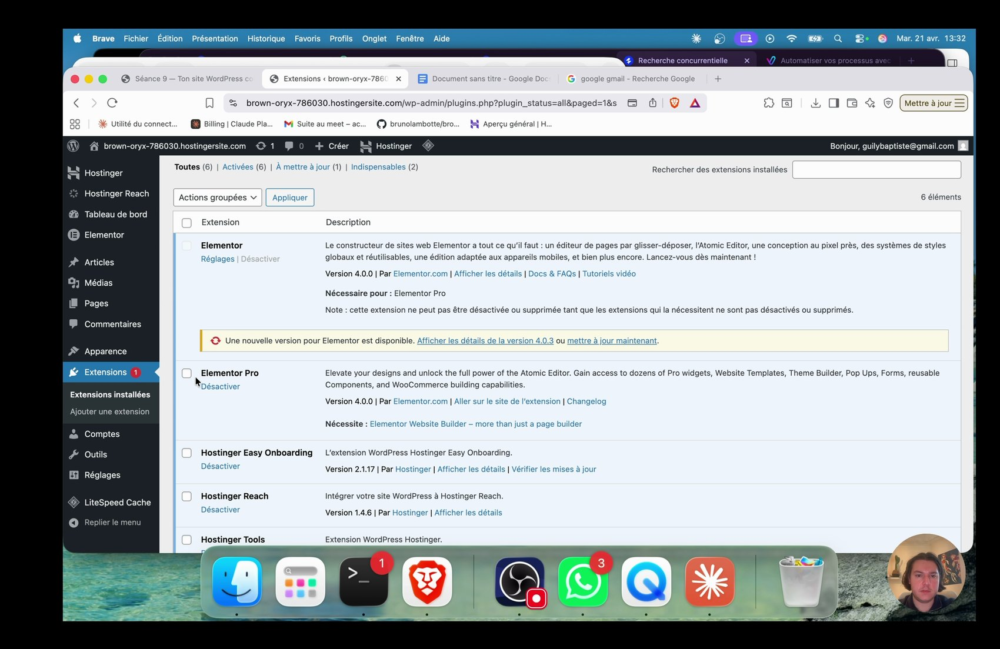
# Depuis ton dossier de travail site
cd ~/Desktop/mon-business/02-site
claude --dangerously-skip-permissions“Je prends une durée réaliste, pas forcément l’offre la plus longue. Le prix mensuel affiché cache souvent un engagement plus cher en cash.”
Choisir une durée raisonnable
Compare le total payé, pas seulement le prix par mois.
Tu évites une mauvaise surprise de paiement.
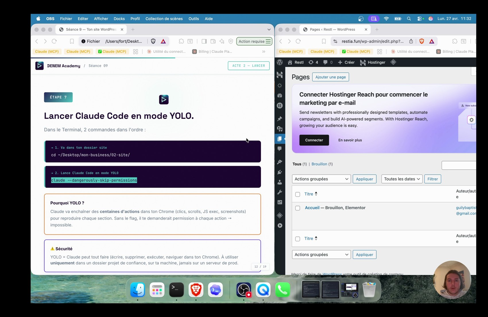
Chercher un nom de domaine
Je teste un nom lié au projet. Pour RestIA, je veux un nom court, mémorisable, cohérent avec la promesse.
Je teste un nom lié au projet. Pour RestIA, je veux un nom court, mémorisable, cohérent avec la promesse.
Teste plusieurs extensions mais garde une logique simple.
Le nom se comprend vite.
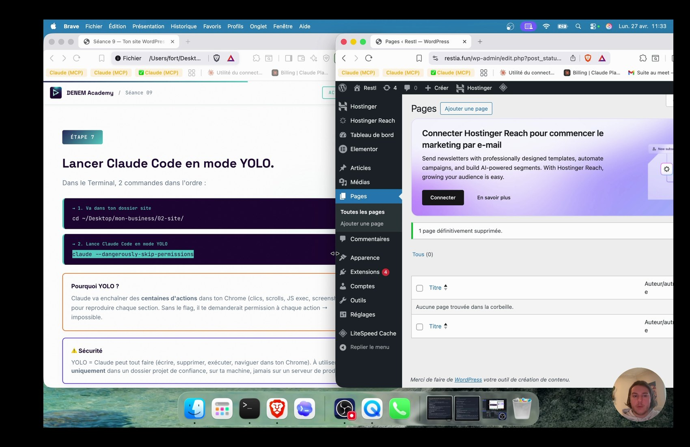
/mcp
Objectif : vérifier que le serveur Chrome MCP est bien connecté et que Claude Code peut ouvrir, lire et piloter un onglet Chrome.Analyser les extensions
Le .fr rassure en France, le .com est standard, le .online est économique, le .ai peut être cher. Le choix dépend de ton budget et de ton image.
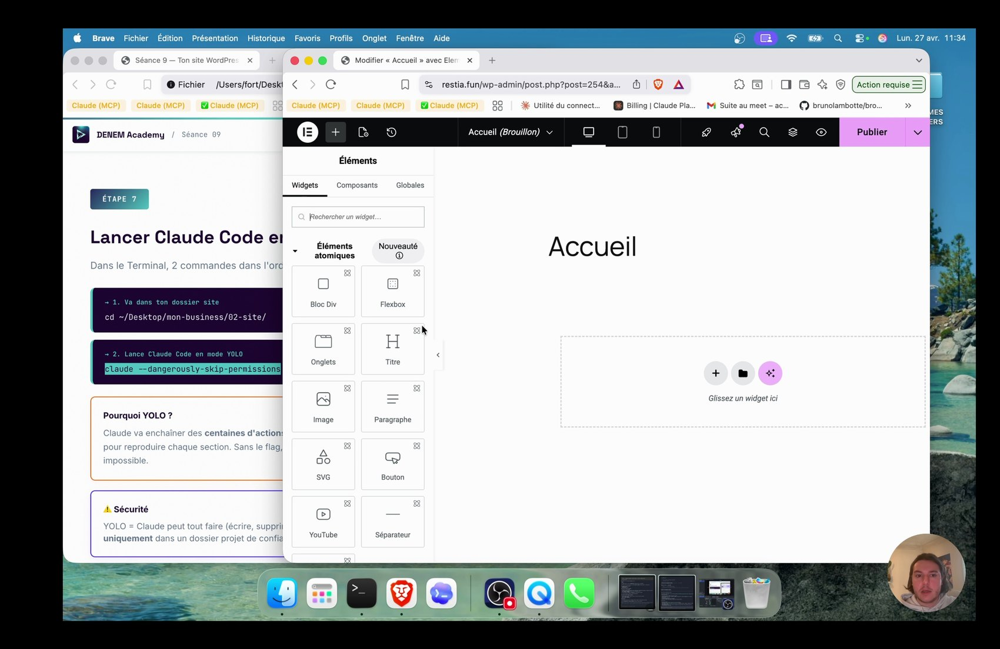
Choisis l’extension comme une décision business, pas comme un détail esthétique.
Le domaine est disponible et cohérent.
Passer au panier
Je vérifie le domaine exact, la durée, les frais et le total. Une erreur de nom coûte du temps.
Relis le domaine caractère par caractère avant de payer.
Le panier contient le bon domaine.
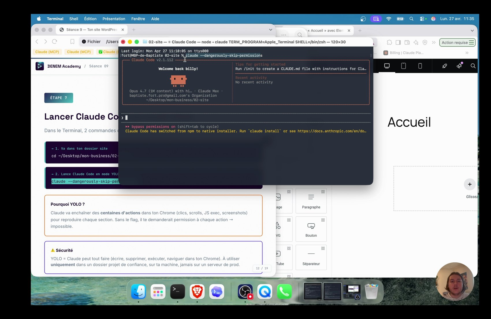
Ouvre un nouvel onglet Chrome via le MCP et navigue vers https://[TON_DOMAINE]/wp-admin.
Attends que je me connecte à la main.
Quand tu vois le tableau de bord WordPress, confirme-moi que la session est active.
Important : je saisis moi-même l'identifiant et le mot de passe. Tu ne me demandes jamais mes accès.Choisir le moyen de paiement
Je garde le paiement simple. Carte, PayPal, Google Pay ou Apple Pay : l’objectif est de finaliser proprement, pas d’optimiser chaque centime.
Ne montre jamais d’informations sensibles dans un support public.
Le paiement peut se faire sans bloquer.
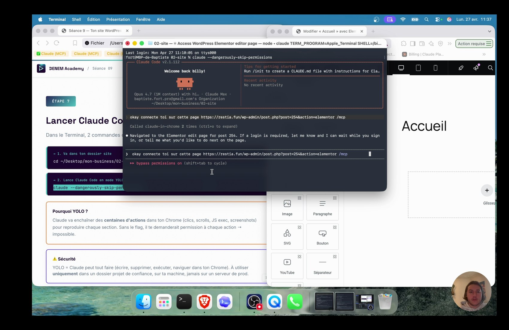
Comprendre les frais
Le total inclut parfois des frais ICANN, TVA ou protection. Je regarde le total final, pas seulement le prix promotionnel.
Garde une capture mentale du vrai coût annuel.
Crée une nouvelle page WordPress appelée "Accueil".
Ouvre-la dans l'éditeur Elementor.
Confirme-moi que le canvas est vide et donne-moi l'URL exacte de l'éditeur avec le post ID.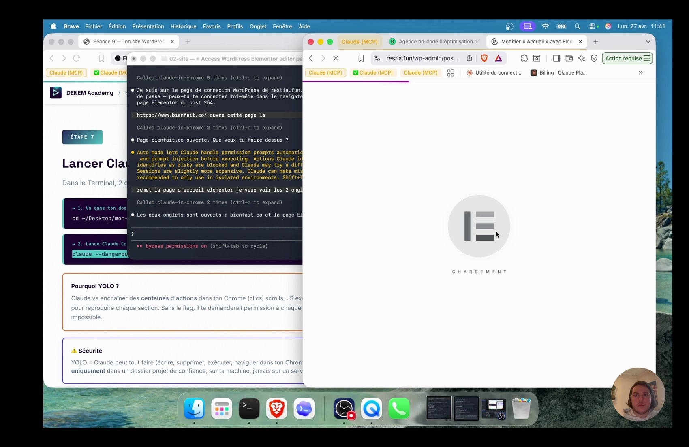
Tu peux expliquer le budget à un client.
Retrouver le domaine ensuite
Après l’achat, je vais dans le portfolio de domaines ou dans hPanel. C’est là que je vérifie ce que j’ai réellement acheté.
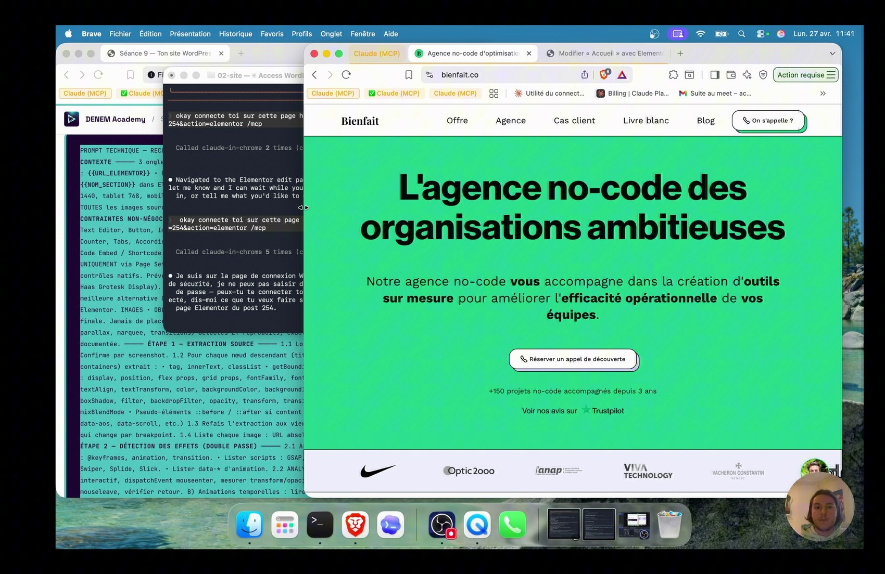
Ne repars pas sur Google si tu es déjà dans ton compte Hostinger.
Le domaine apparaît dans le tableau de bord.
Preuve de réussite Hostinger
La preuve n’est pas le paiement : c’est de voir le domaine dans le compte et de pouvoir l’utiliser pour créer le site.
Passe à WordPress seulement quand le domaine est visible.
Tu peux sélectionner le domaine dans hPanel.
Éviter le mauvais builder
Hostinger pousse parfois son constructeur IA. Il peut être utile, mais ici il casse la méthode : je veux WordPress + Elementor.
Clique WordPress quand Hostinger te demande comment créer le site.
Tu restes dans le bon écosystème.
[Image #X]
Voici la prochaine section.
Reprends exactement le même process : extraction source, plan, construction Elementor, vérification desktop/tablette/mobile, sauvegarde, puis mini compte-rendu.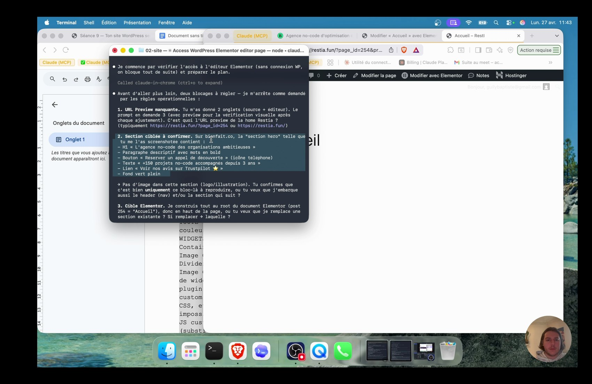
Choisir créer ou migrer
Je crée un site neuf. Migrer sert quand tu as déjà un site ailleurs. Ici, je pars d’une base propre.
Ne choisis pas migration si tu n’as rien à transférer.
Le parcours reste simple.
Choisir la méthode de création
WordPress donne plus de contrôle. Website Builder et Horizons sont séduisants, mais moins adaptés à la suite de la formation.
| Point | Décision | Contrôle |
|---|---|---|
| Objectif | Sélectionne WordPress, pas l’option la plus marketing. | Tu arrives sur l’installation WordPress. |
| Risque | Aller trop vite | Revenir à une validation observable |
Créer les identifiants admin
Je crée un accès admin WordPress. Le mot de passe doit être solide, mais je ne le donne jamais à l’IA.
Ne saute pas cette vérification. Si ce point est flou, la suite va coûter plus cher en corrections.
Stocke tes accès dans un gestionnaire de mots de passe.
Tu peux te connecter à /wp-admin.
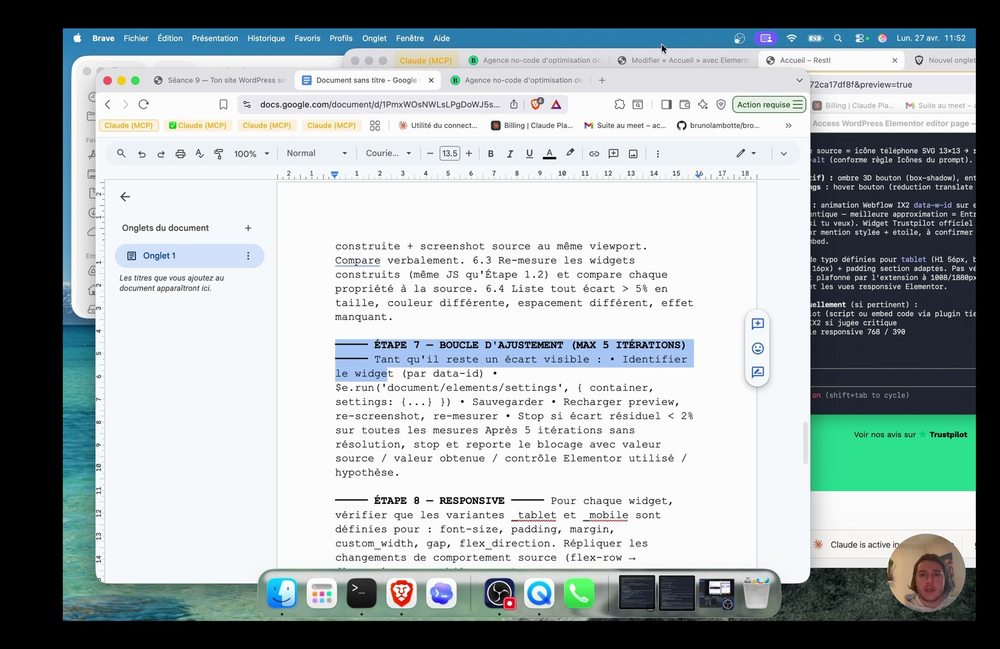
Attacher le domaine au site
Je sélectionne le domaine acheté. Ce choix évite de construire sur une adresse temporaire quand le vrai domaine est prêt.
Une action vague, un outil ouvert, et beaucoup d'incertitude.
Le site cible utilise le bon domaine.
Vérifie que le bon domaine apparaît dans l’écran Hostinger.
Renseigner les infos propriétaire
Pour un domaine, les informations propriétaire peuvent être demandées. Je remplis proprement, sans improviser.
- Je prépare le contexte.
- Je lance une action précise.
- Je vérifie dans l'interface réelle.
- Je corrige seulement ce qui bloque.
Ne mets pas de fausses informations sur un domaine.
Le domaine peut être enregistré correctement.
Choisir la localisation cible
Je choisis la France ou la zone proche de mon audience. Ce n’est pas le détail qui fait tout, mais ça garde une logique de performance.
Si tu ne peux pas expliquer cette étape en une phrase, reviens au dernier écran stable et vérifie l'URL, l'outil ouvert et l'objectif de la section.
Aligne le data center avec ton public principal.
Le site est configuré pour la bonne audience.
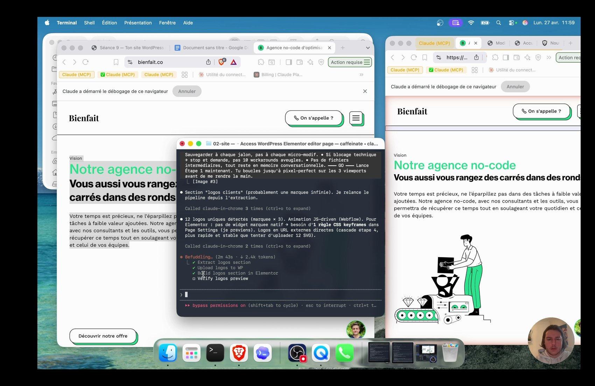
“L’installation WordPress peut prendre quelques minutes. Je laisse faire au lieu de cliquer partout.”
Lancer l’installation
Attends la fin, même si la barre semble lente.
WordPress annonce que le site est prêt.
Ignorer les distractions
Hostinger propose des templates, modules et options. Je prends seulement ce qui sert à ouvrir WordPress.
Hostinger propose des templates, modules et options. Je prends seulement ce qui sert à ouvrir WordPress.
Évite d’empiler des options avant d’avoir une page simple.
Tu arrives au tableau de bord.
Preuve de réussite WordPress
La vraie preuve : le site se charge, wp-admin est accessible, et je peux accéder au tableau de bord WordPress.
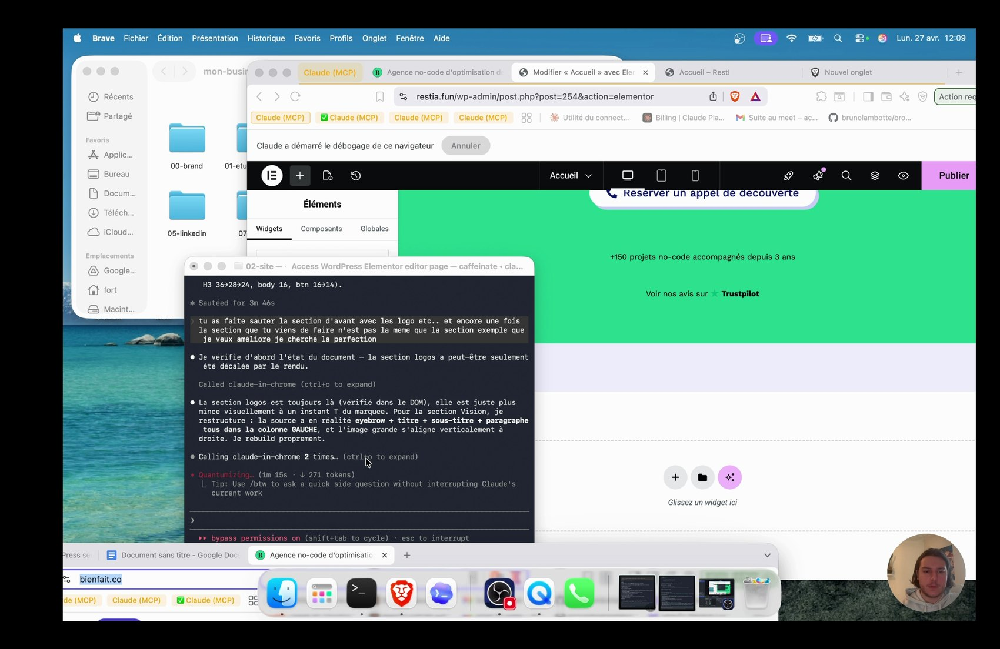
Ouvre /wp-admin pour tester.
Tu vois le menu WordPress.
Entrer dans wp-admin
Je rentre dans WordPress, pas dans Hostinger. hPanel gère l’hébergement, wp-admin gère le site.
Distingue toujours les deux interfaces.
Tu sais où installer les extensions.
Ouvrir Extensions
Je vais dans Extensions > Ajouter. C’est là que WordPress accepte les plugins, soit depuis le répertoire, soit en ZIP.
Ne cherche pas Elementor dans Hostinger.
Tu es sur la page Ajouter des extensions.
Installer Elementor gratuit
Elementor gratuit doit être installé avant Elementor Pro. C’est la base du plugin.
Installe et active la version gratuite d’abord.
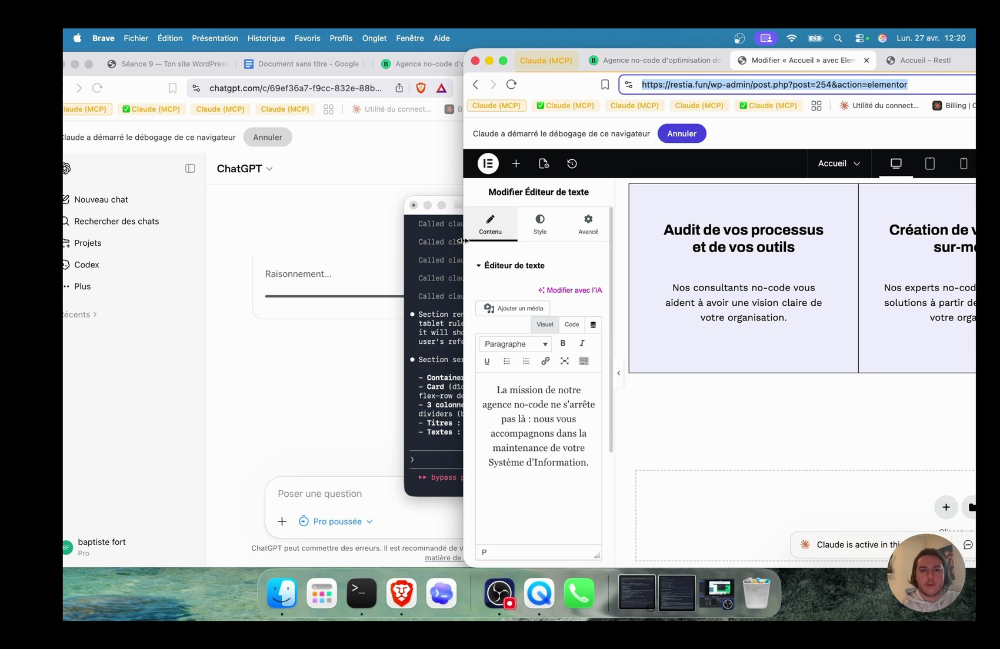
Elementor apparaît dans le menu.
Uploader Elementor en ZIP
Si tu as un fichier ZIP fourni, tu passes par Téléverser une extension. Je choisis le fichier, j’installe, puis j’active.
Ne dézippe pas le plugin avant l’upload WordPress.
WordPress confirme l’installation.
Installer Elementor Pro
Elementor Pro ajoute Theme Builder, header/footer global, formulaires et widgets utiles. Je l’installe après la base.
Même logique : ZIP, installer, activer.
Elementor Pro est actif.
Connecter la licence si besoin
Si une licence est demandée, je la connecte manuellement. Je ne donne pas l’accès à l’IA.
Fais cette partie toi-même si elle contient des identifiants.
Elementor ne bloque pas l’éditeur.
[Image #X]
Voici la prochaine section.
Reprends exactement le même process : extraction source, plan, construction Elementor, vérification desktop/tablette/mobile, sauvegarde, puis mini compte-rendu.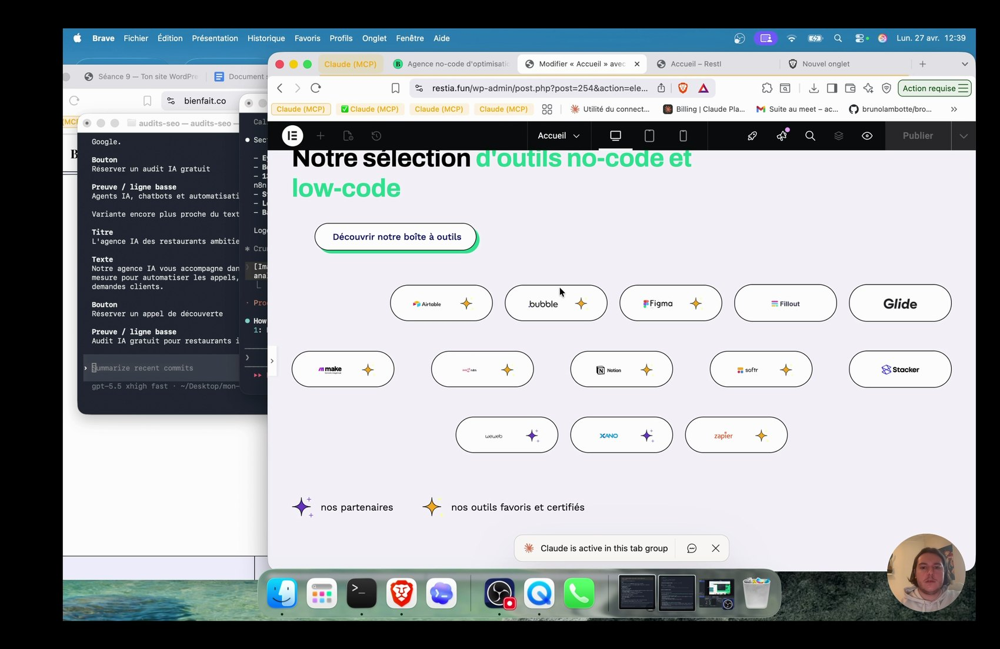
Comprendre les widgets natifs
Je veux que Claude utilise des containers, titres, textes, boutons, images et accordéons natifs. Ça garde le site maintenable.
Évite les blocs HTML bricolés.
Chaque section reste modifiable visuellement.
Créer une page Accueil
Je prépare une page vide. Le canvas vide évite que Claude modifie un template déjà rempli ou un bloc que je ne veux pas toucher.
| Point | Décision | Contrôle |
|---|---|---|
| Objectif | Crée “Accueil” avant de lancer le gros prompt. | La page existe dans WordPress. |
| Risque | Aller trop vite | Revenir à une validation observable |
Ouvrir Modifier avec Elementor
Je veux voir le bouton Modifier avec Elementor et arriver sur le canvas. Sans ça, l’agent ne peut pas construire correctement.
Ne saute pas cette vérification. Si ce point est flou, la suite va coûter plus cher en corrections.
Si Elementor ne s’ouvre pas, règle ce problème avant MCP.
Le canvas est visible.
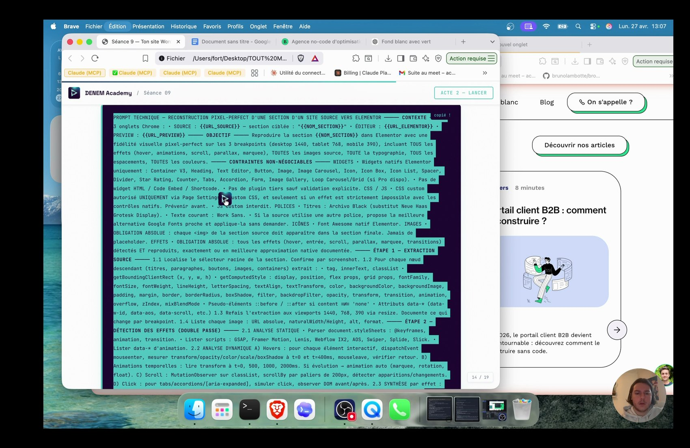
Preuve de réussite Elementor
La preuve : une page Accueil vide ouverte dans Elementor, avec une URL d’éditeur contenant un post ID.
Une action vague, un outil ouvert, et beaucoup d'incertitude.
Claude peut cibler la bonne page.
Copie cette URL dans ton prompt.
Ouvrir le bon dossier
Je lance Claude Code dans le dossier du projet site. Ça garde les fichiers, notes et captures au même endroit.
- Je prépare le contexte.
- Je lance une action précise.
- Je vérifie dans l'interface réelle.
- Je corrige seulement ce qui bloque.
Ne lance pas la session depuis un dossier au hasard.
Le terminal affiche le bon chemin.
Vérifier l’installation
Je vérifie Node, npm et Claude Code. Si la base CLI ne fonctionne pas, le MCP ne servira à rien.
Si tu ne peux pas expliquer cette étape en une phrase, reviens au dernier écran stable et vérifie l'URL, l'outil ouvert et l'objectif de la section.
Teste les commandes avant la session longue.
Claude Code répond.
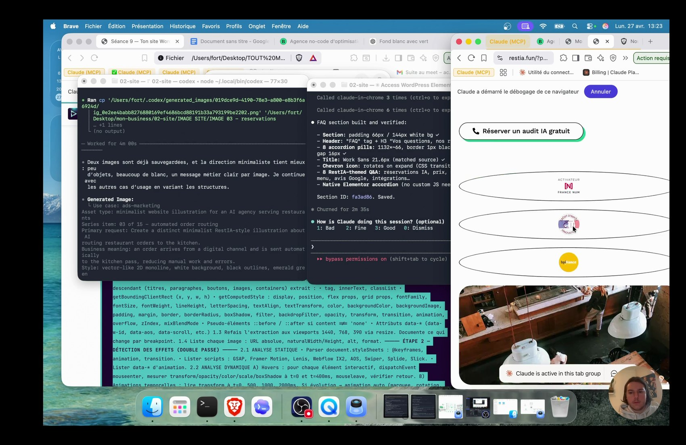
“Dans cette séance, Claude doit faire beaucoup d’actions navigateur. Le mode skip permissions évite de valider chaque clic.”
Lancer en mode permissions souples
Utilise-le uniquement dans un contexte que tu comprends.
Claude peut enchaîner les actions.
Vérifier /mcp
Je lance /mcp pour voir les serveurs connectés. Je veux que Chrome soit disponible.
Je lance /mcp pour voir les serveurs connectés. Je veux que Chrome soit disponible.
Si Chrome MCP n’est pas connecté, stop.
Le serveur apparaît actif.
Tester une navigation
Je demande à Claude d’ouvrir la page WordPress. Il doit contrôler Chrome, pas seulement répondre dans le terminal.
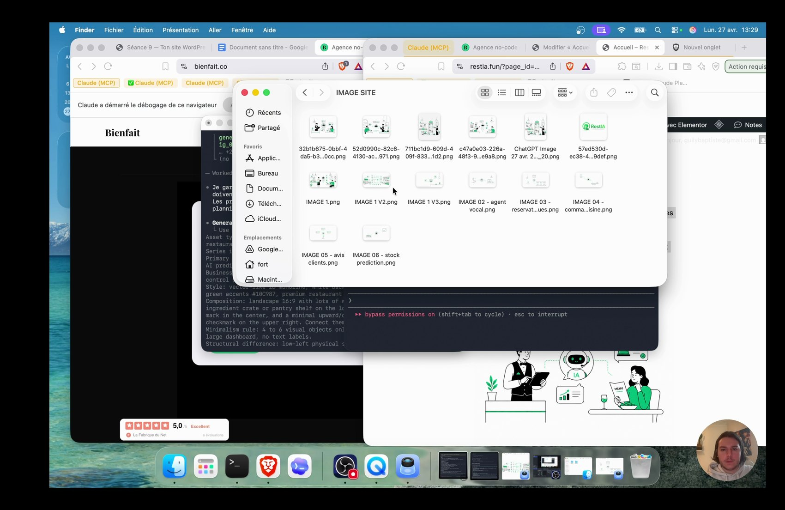
Demande une action simple avant le gros prompt.
Un onglet s’ouvre réellement.
Connexion WordPress manuelle
Si WordPress demande un login, je saisis moi-même. Claude attend et reprend après.
Ne dicte jamais ton mot de passe.
La session est connectée sans exposer les accès.
Garder deux onglets utiles
Je garde un onglet source, un onglet Elementor, et un onglet preview. C’est la base du prompt technique.
N’empile pas 15 onglets inutiles.
Claude sait quelle page lire et quelle page modifier.
Copier les URLs exactes
Je copie l’URL source, l’URL Elementor et l’URL preview. Une URL approximative crée des erreurs bêtes.
Colle les URLs complètes dans le prompt.
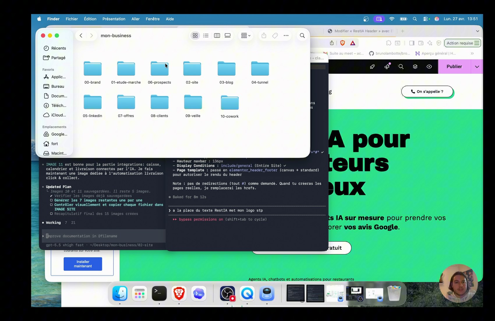
Le post ID Elementor est présent.
Répondre aux questions de cadrage
Quand Claude demande de confirmer la section, je réponds clairement. Je ne relance pas un nouveau prompt.
Réponds court : oui, c’est cette section, fais le hero simplement.
L’agent continue sans repartir de zéro.
Preuve de connexion
La preuve : Claude ouvre, lit, screenshot, puis agit dans Elementor. Là, la mécanique est prête.
Ne passe au prompt pixel-perfect qu’après ce test.
Tu vois les actions dans Chrome.
Pourquoi un prompt long
Un prompt court donne une section approximative. Le prompt long impose la méthode : extraction, plan, construction, QA.
Ne raccourcis pas le prompt technique au début.
Claude suit des étapes claires.
PROMPT TECHNIQUE - RECONSTRUCTION PIXEL-PERFECT D'UNE SECTION D'UN SITE SOURCE VERS ELEMENTOR
CONTEXTE
3 onglets Chrome :
- SOURCE : [URL_SOURCE] - section ciblée : [NOM_SECTION]
- EDITEUR : [URL_ELEMENTOR]
- PREVIEW : [URL_PREVIEW]
OBJECTIF
Reproduire la section [NOM_SECTION] dans Elementor avec une fidélité visuelle pixel-perfect sur desktop 1440, tablette 768 et mobile 390.
Tu dois reprendre la structure, la typographie, les espacements, les couleurs, les images, les hover, les animations et le comportement responsive.
CONTRAINTES
- Widgets natifs Elementor uniquement : Container, Heading, Text Editor, Button, Image, Icon, Icon Box, Divider, Tabs, Accordion, Form si nécessaire.
- Pas de widget HTML, pas de shortcode, pas de plugin tiers sans validation.
- CSS custom seulement si un effet est impossible avec Elementor natif. Tu me préviens avant.
- Toutes les images visibles dans la source doivent être présentes dans la section finale.
- Tu adaptes les textes à mon projet si je fournis un texte ou un audit SEO.
ETAPE 1 - EXTRACTION SOURCE
Localise le conteneur racine de la section.
Extrait pour chaque élément : texte, classe, position, dimensions, style calculé, couleurs, polices, padding, margin, border, radius, shadow, transform, animations et pseudo-éléments.
Refais l'analyse en 1440, 768 et 390.
Liste toutes les images avec URL, taille et alt.
ETAPE 2 - DETECTION DES EFFETS
Teste les hover, transitions, animations temporelles, changements au scroll et accordéons/tabs si présents.
Pour chaque effet, propose la solution Elementor native ou la meilleure approximation.
ETAPE 3 - PLAN D'IMPLEMENTATION
Avant de toucher Elementor, écris le plan : conteneur racine, enfants, widgets, responsive, assets et effets.
Si une décision est incertaine, pose une question courte.
ETAPE 4 - CONSTRUCTION ELEMENTOR
Construis avec les containers et widgets natifs.
Sauvegarde à chaque jalon important, pas à chaque micro-modification.
ETAPE 5 - VERIFICATION
Recharge la preview.
Compare source et résultat en desktop, tablette et mobile.
Liste les écarts visibles, corrige-les, puis recommence jusqu'à obtenir une version propre.
GO
Lance l'extraction de la section maintenant. Tu ne me rends la main qu'après vérification responsive ou blocage clair.Les quatre variables
Je remplis URL source, nom section, URL Elementor et URL preview. Ce sont les coordonnées du chantier.
Remplace toutes les variables avant envoi.
Le prompt ne contient plus de placeholder oublié.
La capture de section
La capture aide Claude à comprendre visuellement ce que je vise. Elle complète le DOM et les styles.
| Point | Décision | Contrôle |
|---|---|---|
| Objectif | Joins la capture correspondant exactement à la section. | La cible est sans ambiguïté. |
| Risque | Aller trop vite | Revenir à une validation observable |
Réponse question 2 : oui, c'est cette section-là.
Réponse question 3 : fais-moi le hero simplement, proprement, avec la même structure visuelle.Extraction source
Claude lit le DOM, les dimensions, les styles calculés, les pseudo-éléments et les images.
Ne saute pas cette vérification. Si ce point est flou, la suite va coûter plus cher en corrections.
Demande l’extraction avant construction.
Tu obtiens un plan au lieu d’un bricolage.
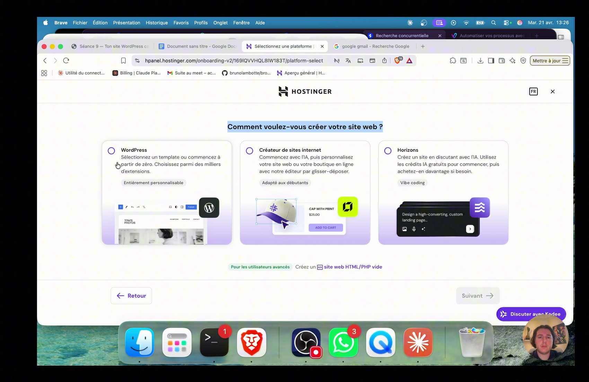
Détection des effets
Hover, scroll, animation, marquee, transitions : je veux que ces détails soient repérés avant d’être reproduits.
Une action vague, un outil ouvert, et beaucoup d'incertitude.
La section vit comme la source.
Ne valide pas une section si les effets principaux manquent.
Plan avant action
Je force Claude à expliquer l’arborescence Elementor avant de modifier la page.
- Je prépare le contexte.
- Je lance une action précise.
- Je vérifie dans l'interface réelle.
- Je corrige seulement ce qui bloque.
Si le plan semble mauvais, corrige avant construction.
La structure est lisible.
Le bouton n'est pas parfait, améliore-le stp.
Vérifie l'espacement interne, l'ombre, l'arrondi, l'alignement du texte et le responsive avant de sauvegarder.Construction native
Containers, headings, textes, boutons, images. Plus c’est natif, plus tu peux modifier après.
Si tu ne peux pas expliquer cette étape en une phrase, reviens au dernier écran stable et vérifie l'URL, l'outil ouvert et l'objectif de la section.
Refuse les solutions HTML si ce n’est pas nécessaire.
La section est éditable dans Elementor.
Rajoute de l'espace entre les éléments.
Garde le même style, mais améliore la respiration visuelle sur desktop, tablette et mobile.“Je veux une sauvegarde après une section propre, pas après chaque micro-modification.”
Sauvegarder aux jalons
Évite les sauvegardes compulsives.
Tu peux revenir à une version stable.
Boucle de comparaison
La section n’est pas terminée quand elle existe. Elle est terminée quand source et preview sont comparées.
La section n’est pas terminée quand elle existe. Elle est terminée quand source et preview sont comparées.
Demande la vérification 1440/768/390.
Les écarts visibles sont corrigés.
Quand s’arrêter
Après plusieurs itérations, si un détail bloque, Claude doit expliquer le blocage au lieu de tenter 10 contournements.
Stoppe les boucles aveugles.
Tu gardes la maîtrise.
Choisir la source
Je prends une section d’un site d’inspiration, ici une logique de hero simple, forte, avec un CTA clair.
Choisis une source vraiment alignée avec ton marché.
La section a un rôle commercial.
Confirmer la section
Quand Claude hésite, je confirme la section ciblée. Cette réponse évite qu’il analyse la mauvaise zone.
Réponds à ses questions sans changer de sujet.
Il reprend la bonne section.
Adapter au projet
Je ne copie pas seulement le texte source. Je transforme le contenu pour RestIA ou ton projet.
Garde la structure, change la promesse.
[Image #X]
Voici la prochaine section.
Reprends exactement le même process : extraction source, plan, construction Elementor, vérification desktop/tablette/mobile, sauvegarde, puis mini compte-rendu.Le site parle à ta cible.
Créer la section dans Elementor
Claude construit le container racine, le titre, le texte, le bouton, les espacements et les images.
Observe la structure dans l’éditeur.
Tu peux cliquer chaque bloc.
Regarder la preview
La preview montre ce que verra le visiteur. L’éditeur peut mentir sur certains espacements.
Toujours vérifier côté preview.
Le rendu public est propre.
Corriger le bouton
Un bouton trop étroit, trop haut ou mal ombré casse vite le design. Je donne une correction courte.
Demande une correction ciblée, pas “refais tout”.
Le CTA respire.
[Image #X]
Voici la prochaine section.
Reprends exactement le même process : extraction source, plan, construction Elementor, vérification desktop/tablette/mobile, sauvegarde, puis mini compte-rendu.Corriger l’espacement
Si le hero est trop dense, j’ajoute de l’espace. Un site premium respire.
Corrige padding et gap avant d’ajouter d’autres sections.
Le haut de page est équilibré.
Tester tablette
La tablette révèle souvent les titres trop larges et les boutons mal placés.
| Point | Décision | Contrôle |
|---|---|---|
| Objectif | Demande la vue 768 avant de valider. | Le hero ne déborde pas. |
| Risque | Aller trop vite | Revenir à une validation observable |
Tester mobile
Le mobile est le vrai test. Le titre doit rester lisible et le bouton accessible.
Ne saute pas cette vérification. Si ce point est flou, la suite va coûter plus cher en corrections.
Regarde 390 px, pas seulement desktop.
La première impression mobile est bonne.
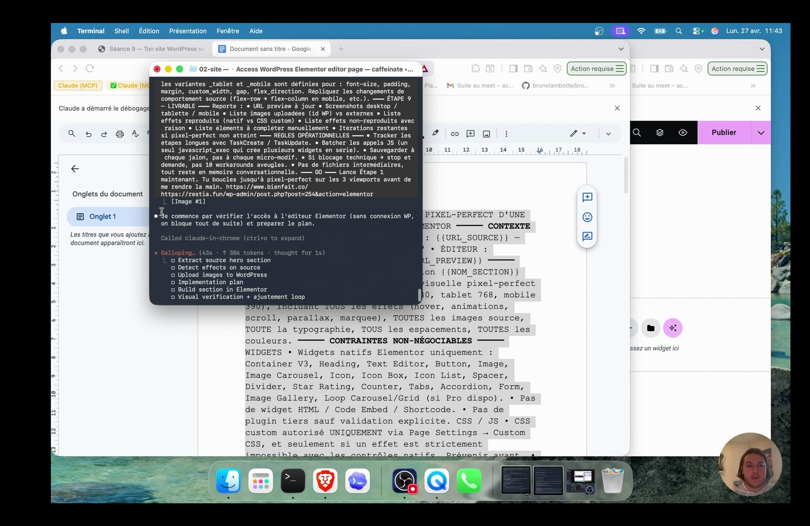
Valider le hero
Une fois le hero propre, je n’y retouche plus toutes les 5 minutes. Je passe à la suite.
Une action vague, un outil ouvert, et beaucoup d'incertitude.
La base visuelle est posée.
Stabilise avant d’empiler.
Ne pas changer de méthode
Je garde le même prompt et je change seulement la section, les URLs ou le contexte.
- Je prépare le contexte.
- Je lance une action précise.
- Je vérifie dans l'interface réelle.
- Je corrige seulement ce qui bloque.
Ne réinvente pas le workflow à chaque bloc.
La production devient rapide.
Capturer la bonne zone
La capture doit commencer et finir au bon endroit. Trop large, Claude se disperse. Trop court, il rate des espacements.
Si tu ne peux pas expliquer cette étape en une phrase, reviens au dernier écran stable et vérifie l'URL, l'outil ouvert et l'objectif de la section.
Cadre précisément la section.
Le plan d’extraction est propre.
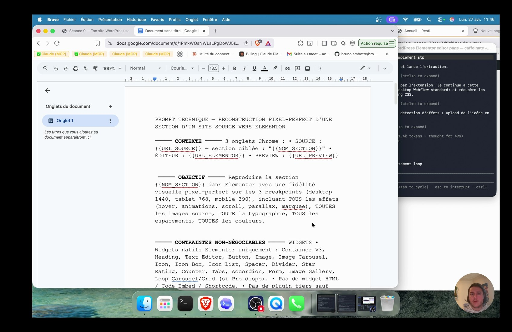
“Je dis “voici la prochaine section” et je laisse Claude reprendre le process complet.”
Lancer la section suivante
Le prompt suivant doit être explicite mais court.
Claude comprend la continuité.
Observer sans micro-manager
Pendant que Claude agit, je surveille les décisions importantes mais je n’interromps pas chaque clic.
Pendant que Claude agit, je surveille les décisions importantes mais je n’interromps pas chaque clic.
Interviens seulement si la direction est mauvaise.
La session avance.
Corriger après rendu
Je corrige quand je vois le résultat, pas sur une supposition.
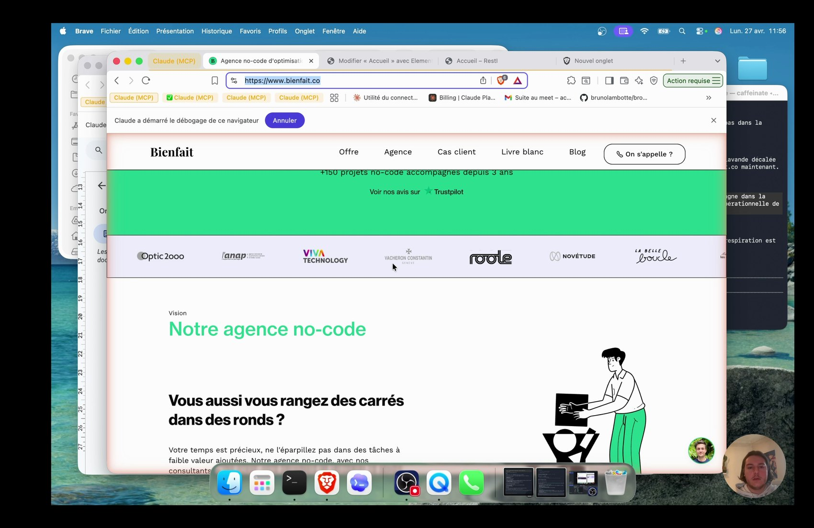
Attends la preview avant de juger.
Les retours sont concrets.
Gérer les logos
Les logos peuvent casser les tailles. Je vérifie les proportions et je remplace quand nécessaire.
Utilise des logos cohérents et lisibles.
La barre de logos ne flotte pas bizarrement.
Accepter les petites différences
Pixel-perfect ne veut pas dire obsession infinie. Si la structure est bonne et le ressenti bon, je passe.
Distingue défaut visible et détail invisible.
Tu finis la page.
Réutiliser le texte d’audit
La stratégie SEO nourrit les sections. Je ne laisse pas les textes génériques du site source.
Injecte ton positionnement dans les blocs.
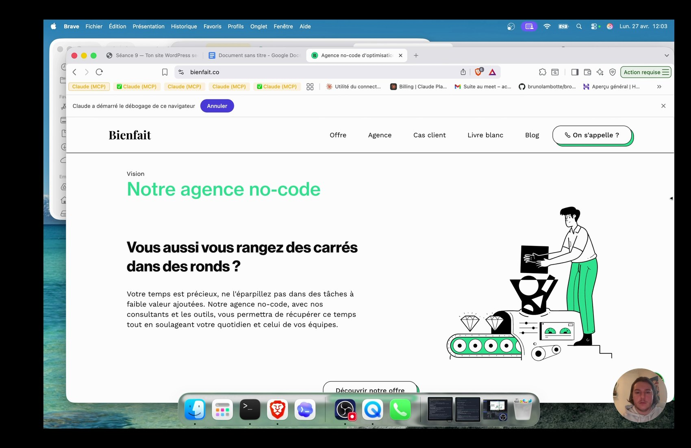
La page vend ton offre.
Faire une page en blocs
Hero, preuves, services, outils, FAQ, CTA. Chaque section a un rôle.
N’ajoute pas une section juste parce qu’elle est jolie.
La page raconte quelque chose.
Mini récap répétition
Même boucle : source, capture, prompt, plan, build, preview, corrections, validation.
Répète cette boucle jusqu’à la page complète.
Tu as une méthode industrialisable.
Pourquoi remplacer les images
Copier une image source n’est pas propre. Je garde l’idée visuelle, mais je crée ou adapte des visuels pour mon projet.
Ne vole pas les assets d’un autre site.
La page devient vraiment à toi.
[Image #X]
Voici la prochaine section.
Reprends exactement le même process : extraction source, plan, construction Elementor, vérification desktop/tablette/mobile, sauvegarde, puis mini compte-rendu.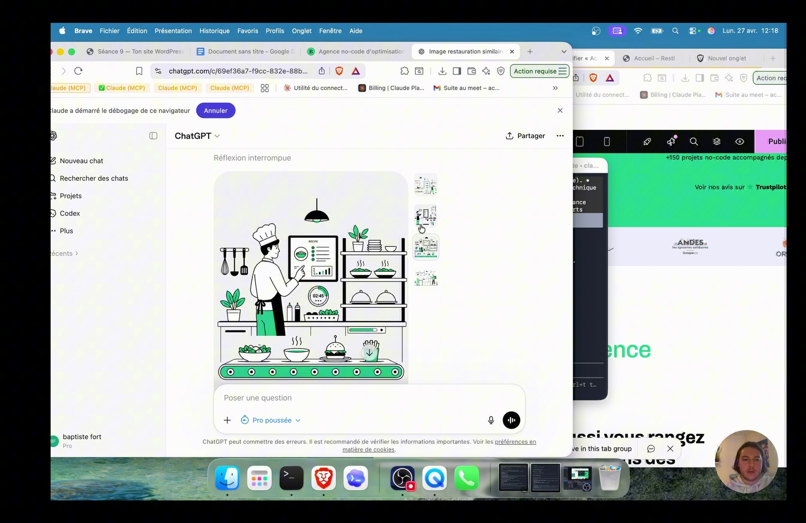
Créer un dossier images
Je centralise les visuels du projet. Ça évite les fichiers dispersés dans Downloads et les liens cassés.
Crée un dossier clair dans ton espace site.
Tu retrouves les assets.
Utiliser ChatGPT si utile
Je peux utiliser ChatGPT pour restaurer ou générer une image cohérente. L’important est de garder le style du site.
| Point | Décision | Contrôle |
|---|---|---|
| Objectif | Ne multiplie pas les styles visuels. | Les images semblent appartenir au même univers. |
| Risque | Aller trop vite | Revenir à une validation observable |
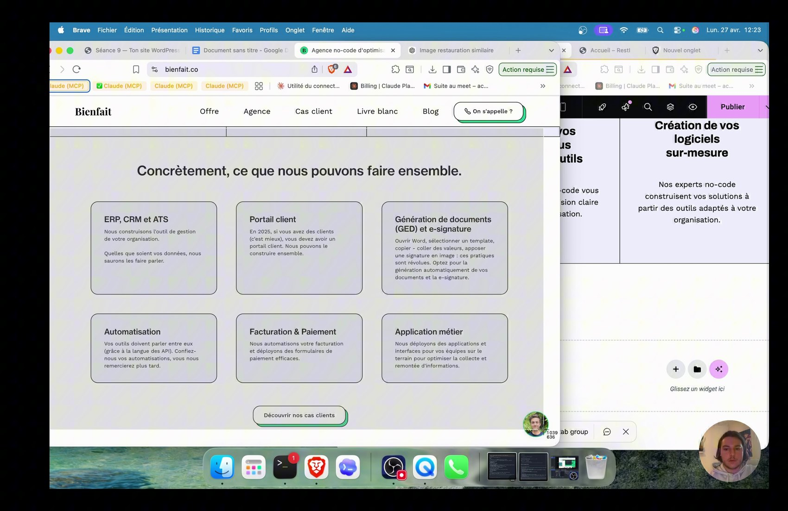
À partir de cette section, crée ou adapte une image cohérente avec mon projet [TON_PROJET].
Style : simple, propre, noir/blanc avec accent vert.
Sujet : [SUJET_IMAGE].
Elle doit remplacer l'image source sans casser la composition de la section.
Prépare-la pour un usage web et indique où elle doit être placée dans Elementor.Donner du contexte à l’image
Une bonne demande image précise le sujet, le style, l’usage et la section où elle sera placée.
Ne saute pas cette vérification. Si ce point est flou, la suite va coûter plus cher en corrections.
Décris l’image comme un asset web, pas comme une affiche.
Le résultat rentre dans la composition.
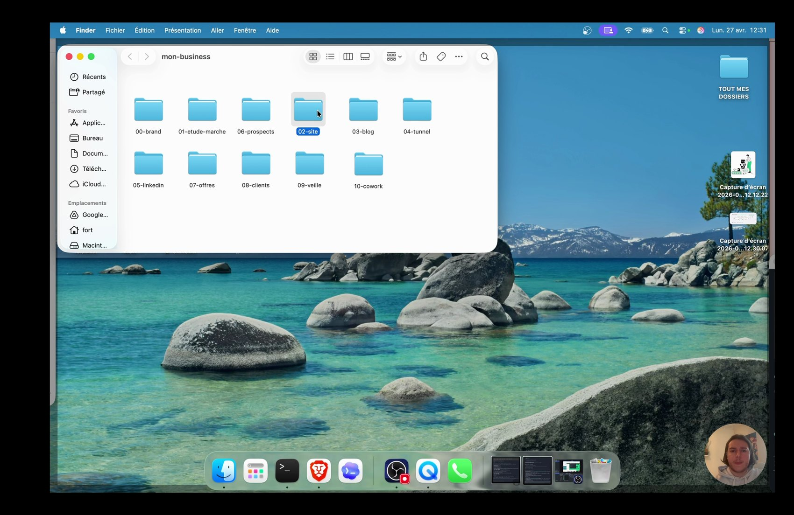
Comparer la qualité
Si l’image générée ne va pas, je le dis. Je ne garde pas une image moyenne juste parce qu’elle existe.
Une action vague, un outil ouvert, et beaucoup d'incertitude.
La page garde un niveau premium.
Sois exigeant sur les visuels clés.
Uploader dans WordPress
Les images finales doivent être dans la médiathèque quand c’est possible.
- Je prépare le contexte.
- Je lance une action précise.
- Je vérifie dans l'interface réelle.
- Je corrige seulement ce qui bloque.
Évite les chemins locaux ou captures temporaires.
La page reste stable en ligne.
Remplacer sans casser
Changer une image peut modifier la hauteur, le ratio et l’équilibre. Je vérifie après remplacement.
Si tu ne peux pas expliquer cette étape en une phrase, reviens au dernier écran stable et vérifie l'URL, l'outil ouvert et l'objectif de la section.
Garde le ratio attendu par la section.
La section reste alignée.
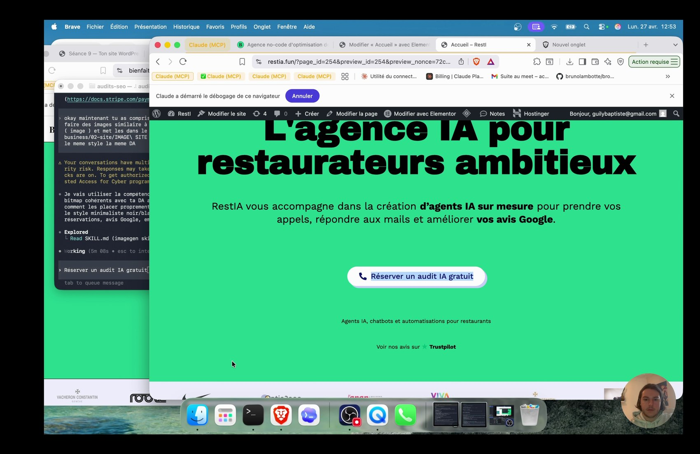
“Certaines images fonctionnent sur fond vert mais pas sur fond blanc. Je vérifie le contraste.”
Gérer le fond transparent
Teste l’image sur le fond réel.
Aucun contour étrange.
Nommer les fichiers
Un fichier nommé `image-final-v2.png` ne t’aide pas. Je donne des noms simples et utiles.
Un fichier nommé `image-final-v2.png` ne t’aide pas. Je donne des noms simples et utiles.
Nomme par section et usage.
Tu peux maintenir le site.
Preuve asset propre
La preuve : l’image est dans WordPress, s’affiche en preview et reste lisible sur mobile.
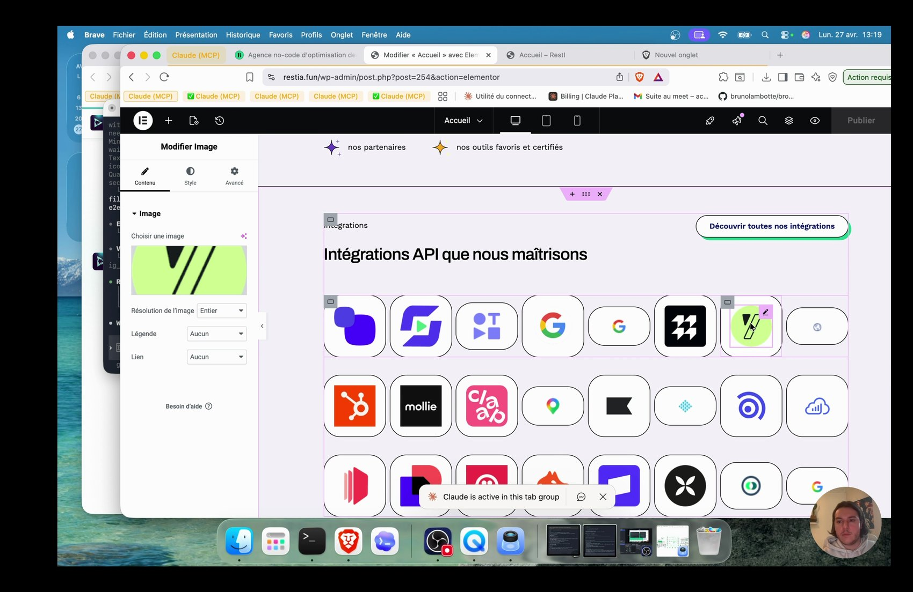
Teste après upload.
L’asset est publiable.
Section logos outils
Une section outils montre l’écosystème : Airtable, Make, n8n, Notion, Figma, etc. Elle rassure sur la capacité d’exécution.
Garde seulement les outils cohérents avec ton offre.
Le visiteur comprend ton stack.
Section services
Les services doivent être concrets. Audit IA, chatbot SAV, assistant email, agent vocal, automatisation.
Écris des services que tu peux vraiment livrer.
La section donne envie de cliquer.
Section preuves
Les preuves peuvent être chiffres, méthode, cas, avis, livrables. Au début, on peut utiliser des preuves de process.
Ne mens pas sur des résultats client.
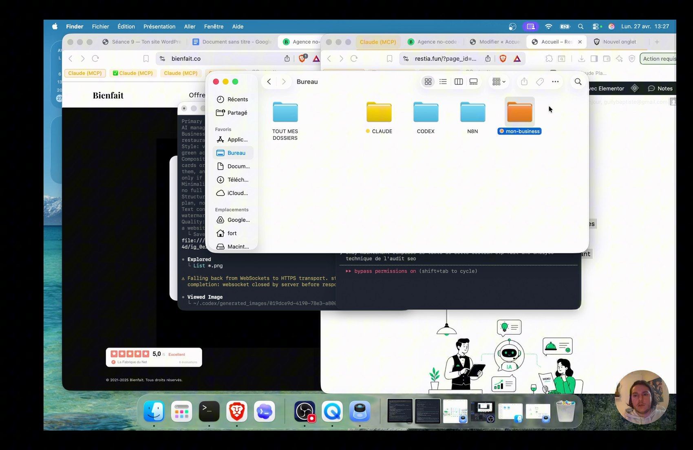
La preuve reste crédible.
Section problème
Je montre le problème du client avant la solution. Ça rend la page plus claire.
Parle avec les mots de la cible.
Le lecteur se reconnaît.
Section méthode
Une méthode en 3 ou 4 étapes rassure. Le client voit comment ça va se passer.
Explique la prochaine action, pas toute la cuisine interne.
Le parcours semble simple.
Section FAQ
La FAQ enlève les objections : prix, délai, données, personnalisation, outils, maintenance.
Réponds court et concret.
Les objections principales sont traitées.
[Image #X]
Voici la prochaine section.
Reprends exactement le même process : extraction source, plan, construction Elementor, vérification desktop/tablette/mobile, sauvegarde, puis mini compte-rendu.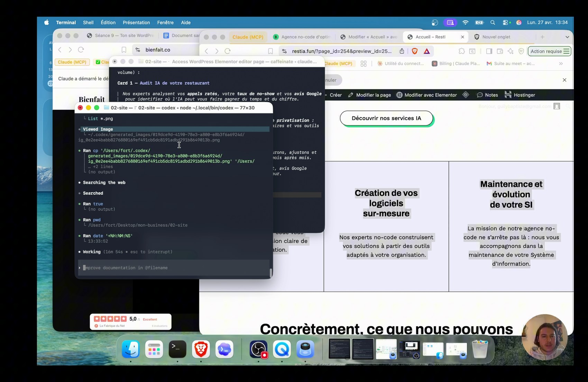
Section CTA
Le CTA doit être visible, répété et cohérent. Pas 7 actions différentes.
Choisis un CTA principal.
Le visiteur sait quoi faire.
Section contact
Une page sans moyen clair de contact perd des prospects.
| Point | Décision | Contrôle |
|---|---|---|
| Objectif | Prépare email, formulaire ou lien Calendly. | Le contact est accessible. |
| Risque | Aller trop vite | Revenir à une validation observable |
Cohérence des textes
Chaque section doit reprendre le même angle : RestIA aide les restaurants à automatiser sans complexité.
Ne saute pas cette vérification. Si ce point est flou, la suite va coûter plus cher en corrections.
Évite les slogans contradictoires.
La page a une voix unique.
Preuve page complète
La preuve : en scrollant, on comprend le problème, la solution, les services, les preuves et l’action.
Une action vague, un outil ouvert, et beaucoup d'incertitude.
La page raconte une histoire.
Lis la page comme un visiteur pressé.
Desktop 1440
Le desktop permet de vérifier la composition large, les colonnes et la hiérarchie.
- Je prépare le contexte.
- Je lance une action précise.
- Je vérifie dans l'interface réelle.
- Je corrige seulement ce qui bloque.
Commence par desktop pour stabiliser la structure.
Les sections respirent.
Tablette 768
La tablette révèle les grilles qui ne savent pas encore passer en colonne.
Si tu ne peux pas expliquer cette étape en une phrase, reviens au dernier écran stable et vérifie l'URL, l'outil ouvert et l'objectif de la section.
Vérifie les breakpoints Elementor.
Les cartes ne s’écrasent pas.
“Le mobile montre les vrais problèmes : titre trop grand, bouton sur plusieurs lignes, image coupée, padding trop large.”
Mobile 390
Vérifie chaque section en mobile.
Aucun texte ne déborde.
Taille des titres
Un H1 peut être beau sur desktop et impossible sur mobile. Je définis des tailles par breakpoint.
Un H1 peut être beau sur desktop et impossible sur mobile. Je définis des tailles par breakpoint.
Ne garde pas la même typo partout.
Le titre reste lisible.
Images centrées
Une image peut glisser hors cadre. Je vérifie object-fit, alignement et largeur.
Regarde les images une par une.
Elles restent dans le viewport.
Boutons tactiles
Sur mobile, le bouton doit être assez grand et lisible.
Vérifie hauteur, largeur et texte.
Le CTA est cliquable.
Espacements mobiles
Les grands paddings desktop peuvent créer un trou immense sur mobile.
Réduis padding vertical si nécessaire.
La page ne semble pas vide.
Menu et navigation
La navbar mobile doit fonctionner. Si le menu est global, je le vérifie sur plusieurs pages.
Teste le hamburger, pas seulement son apparence.
Le menu s’ouvre et redirige.
QA après correction
Chaque correction responsive peut casser desktop. Je repasse rapidement sur les trois vues.
Ne corrige pas à l’aveugle.
Les trois breakpoints restent OK.
Preuve responsive
La preuve : screenshots ou vérification claire desktop/tablette/mobile, et pas de scroll horizontal.
Demande un compte-rendu à Claude.
La page est publiable.
Relire l’audit
Je reprends les mots-clés, les services, la cible, les objections et le positionnement.
Ouvre la stratégie avant de réécrire.
Les textes ne sont pas génériques.
[Image #X]
Voici la prochaine section.
Reprends exactement le même process : extraction source, plan, construction Elementor, vérification desktop/tablette/mobile, sauvegarde, puis mini compte-rendu.Adapter le hero
Le hero doit dire qui j’aide, sur quoi, et avec quel résultat.
Écris une promesse simple.
Le visiteur comprend en 5 secondes.
Analyse mon audit SEO et ma stratégie.
Réécris les textes de cette section pour [TON_PROJET], en gardant la même structure visuelle.
Cible : [TA_CIBLE].
Promesse : [TA_PROMESSE].
Ton : simple, direct, naturel.
Ne rajoute pas de longueur inutile. Le texte doit rentrer dans les blocs existants.Adapter les services
Les services sortent de l’offre : chatbot, agent vocal, assistant email, automatisations.
| Point | Décision | Contrôle |
|---|---|---|
| Objectif | Garde les intitulés orientés client. | Le client voit ce qu’il achète. |
| Risque | Aller trop vite | Revenir à une validation observable |
Fais un audit responsive complet de la page.
Vérifie desktop 1440, tablette 768 et mobile 390.
Liste les problèmes visibles : texte qui déborde, bouton trop étroit, image mal centrée, section trop haute, espacement incohérent, menu inutilisable.
Corrige uniquement ce qui est nécessaire puis sauvegarde.Adapter les preuves
Je peux prouver par méthode, audit gratuit, livrable, délai, process, exemple, avant d’avoir beaucoup de cas clients.
Ne saute pas cette vérification. Si ce point est flou, la suite va coûter plus cher en corrections.
Ne fabrique pas de faux chiffres.
La confiance reste saine.
Adapter la FAQ
La FAQ répond aux questions réelles du marché : délai, données, prix, personnalisation, intégrations.
Une action vague, un outil ouvert, et beaucoup d'incertitude.
La FAQ réduit la friction.
Écris comme si tu répondais en rendez-vous.
Adapter le CTA
Un CTA doit correspondre à l’offre d’entrée : appel découverte, audit gratuit, diagnostic.
- Je prépare le contexte.
- Je lance une action précise.
- Je vérifie dans l'interface réelle.
- Je corrige seulement ce qui bloque.
Ne mélange pas audit, devis et newsletter partout.
L’action est claire.
Contrôler la longueur
Un texte SEO trop long casse le design. Je garde des phrases courtes et utiles.
Si tu ne peux pas expliquer cette étape en une phrase, reviens au dernier écran stable et vérifie l'URL, l'outil ouvert et l'objectif de la section.
Respecte les blocs existants.
Le texte rentre sans déborder.
“Restaurants, réservations, avis Google, menu, appels, clients, équipes. Ces mots parlent plus que jargon IA.”
Utiliser les mots de la cible
Remplace le jargon par un bénéfice.
La page paraît humaine.
Vérifier la cohérence
Je relis toute la page après adaptation. Je veux une seule promesse, pas 5 directions.
Je relis toute la page après adaptation. Je veux une seule promesse, pas 5 directions.
Supprime les phrases qui ne servent pas.
La page est plus nette.
Preuve SEO intégrée
La preuve : les titres, services et FAQ reprennent la stratégie sans ressembler à un bourrage de mots-clés.
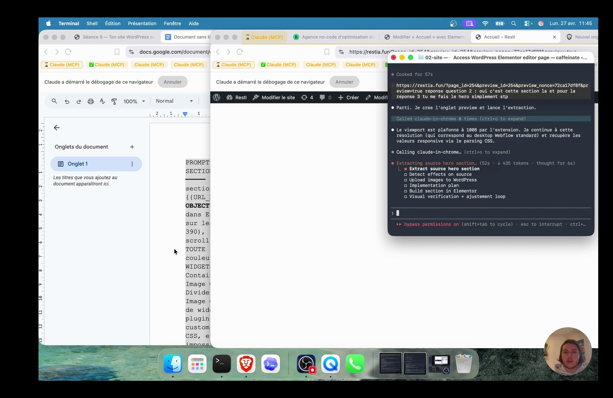
Lis à voix haute.
Le contenu reste naturel.
Pourquoi attendre
Je ne crée pas la navbar globale avant d’avoir les pages principales. Sinon je dois la reprendre plusieurs fois.
Construis d’abord les pages utiles.
Le menu aura de vraies destinations.
Créer la navbar
La navbar doit être globale, claire, responsive, avec CTA. Elementor Pro Theme Builder sert à ça.
Utilise un vrai menu WordPress.
Elle apparaît partout.
Tester les liens
Un beau menu avec mauvais liens détruit la confiance. Je clique tout.
Teste chaque item en public.
Reproduis la navbar de [URL_SOURCE] à l'identique et déploie-la sur toutes les pages de mon WordPress via Elementor Pro Theme Builder.
Contraintes :
- Widgets natifs Elementor uniquement.
- Menu WordPress réel lié aux pages existantes.
- Display Conditions : Entire Site.
- Desktop, tablette, mobile vérifiés.
- Hover, sticky, hamburger mobile et liens testés un par un.
Demande-moi les URLs ou libellés manquants avant d'inventer.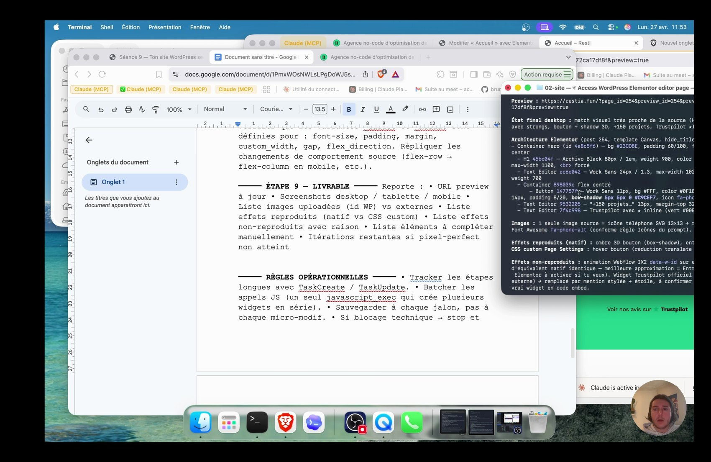
Les redirections sont correctes.
Créer le footer
Le footer rassemble liens, contact, mentions, rappel de l’offre. Il doit être global et propre.
N’invente pas les URLs sociales.
Le bas de page est fiable.
Reproduis le footer de [URL_SOURCE] à l'identique et déploie-le sur toutes les pages de mon WordPress via Elementor Pro Theme Builder.
Contraintes :
- Widgets natifs Elementor uniquement : Container, Image, Heading, Text, Icon List, Social Icons, Button, Form, Divider.
- Tous les liens internes pointent vers de vraies pages WordPress.
- Les liens externes ne sont pas inventés : tu me les demandes.
- Display Conditions : Entire Site.
- Desktop, tablette et mobile vérifiés.
- Tous les liens sont testés un par un.Créer les pages légales
Mentions, confidentialité, CGU peuvent être nécessaires. Je ne les invente pas à l’arrache si le site part en production.
Prépare-les avant de publier sérieusement.
Le footer ne pointe pas vers du vide.
Créer page Solution
Après Accueil, je peux créer une page Solution avec la même méthode section par section.
Réutilise le prompt section.
La page a sa propre URL.
[Image #X]
Voici la prochaine section.
Reprends exactement le même process : extraction source, plan, construction Elementor, vérification desktop/tablette/mobile, sauvegarde, puis mini compte-rendu.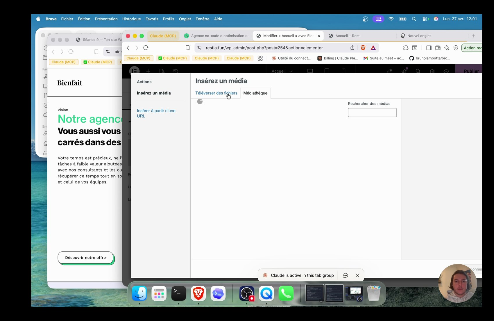
Créer page Contact
La page Contact doit être simple : promesse, formulaire ou calendrier, infos pratiques.
Ne la surcharge pas.
Le prospect peut agir.
Assigner la page d’accueil
WordPress doit afficher la bonne page en accueil.
| Point | Décision | Contrôle |
|---|---|---|
| Objectif | Réglages > Lecture si nécessaire. | Le domaine ouvre la bonne page. |
| Risque | Aller trop vite | Revenir à une validation observable |
Publier proprement
Je publie quand les blocs clés sont prêts, pas au milieu d’une section cassée.
Ne saute pas cette vérification. Si ce point est flou, la suite va coûter plus cher en corrections.
Sauvegarde puis preview puis publication.
La version publique est propre.
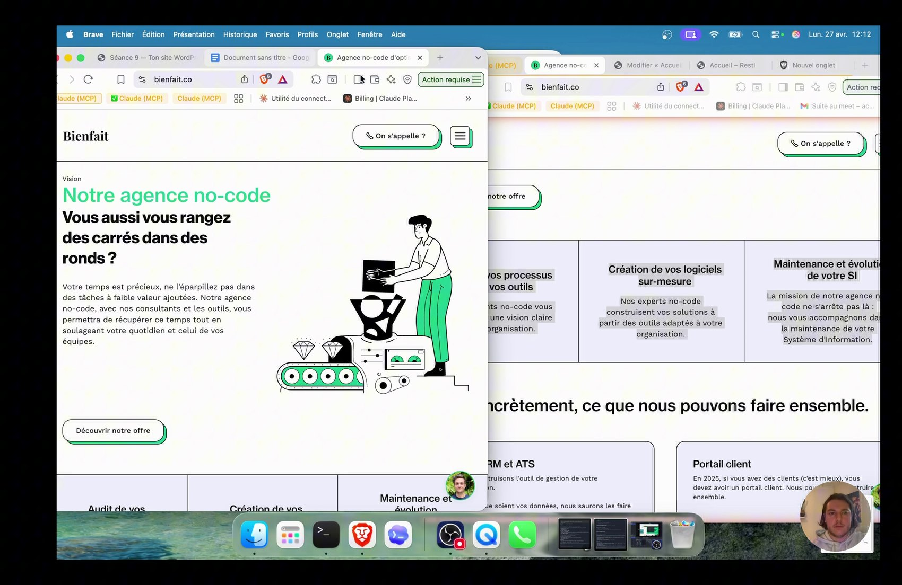
Preuve globale
La preuve : navbar, footer et pages fonctionnent sur tout le site.
Une action vague, un outil ouvert, et beaucoup d'incertitude.
Le site ressemble à un vrai produit.
Ouvre en navigation privée.
Garder un dossier par projet
Chaque client ou projet doit avoir son dossier avec audit, textes, images, prompts et captures.
- Je prépare le contexte.
- Je lance une action précise.
- Je vérifie dans l'interface réelle.
- Je corrige seulement ce qui bloque.
Ne mélange pas tous les sites.
Tu peux reprendre le travail plus tard.
Sauvegarder aux bons moments
Je sauvegarde après section validée, après responsive, après global header/footer.
Si tu ne peux pas expliquer cette étape en une phrase, reviens au dernier écran stable et vérifie l'URL, l'outil ouvert et l'objectif de la section.
N’attends pas la fin de 3 h.
Tu limites la casse.
“Si Claude bloque, il doit expliquer. Je préfère un blocage clair à 10 actions bizarres.”
Éviter les workarounds aveugles
Demande source du blocage, hypothèse et option.
Tu restes maître.
Travailler en parallèle
Pendant que Claude construit, je prépare textes, images, prochaine capture, FAQ.
Pendant que Claude construit, je prépare textes, images, prochaine capture, FAQ.
Utilise le temps d’attente intelligemment.
La session produit plus.
Limiter les changements de style
Changer couleur, typo et layout toutes les 10 minutes rend la page incohérente.
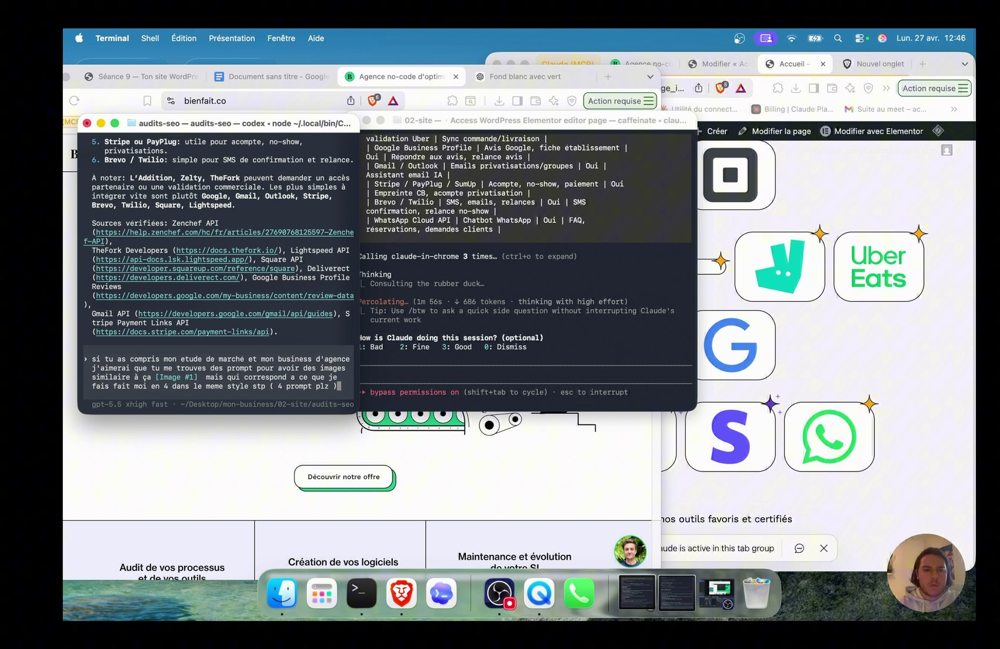
Décide le système visuel tôt.
Le site garde une identité.
Demander des corrections courtes
Une correction doit viser un problème précis : bouton, espacement, image, mobile.
Évite “améliore tout”.
Claude corrige mieux.
Crée une nouvelle page WordPress appelée [NOM_PAGE].
Ouvre-la dans Elementor.
Réutilise le même workflow section par section que pour la page Accueil.
À la fin, vérifie que la page est publiée, accessible et liée au menu si nécessaire.Documenter les prompts
Les prompts qui marchent doivent être conservés. C’est ton système réutilisable.
Copie les meilleurs prompts dans ton QG.
Tu gagnes du temps sur le prochain site.
Ne pas exposer les accès
Connexion WordPress, paiement, licences : je fais moi-même. L’agent attend.
Ne colle jamais d’identifiants dans le terminal.
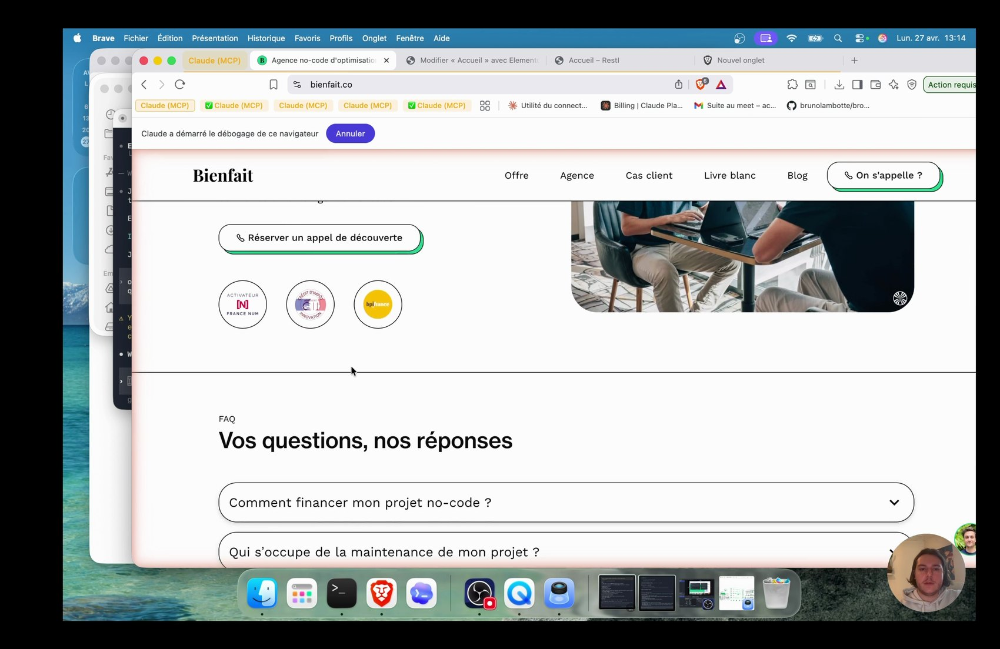
La sécurité reste propre.
Savoir quand arrêter
Une page peut toujours être améliorée. Je m’arrête quand elle vend clairement et ne casse pas en responsive.
Fixe une définition de fini.
Tu livres.
Preuve méthode pro
La preuve : je peux refaire la même méthode sur une nouvelle page sans improviser.
Rejoue le workflow sur Solution.
La compétence est acquise.
Checklist environnement
Domaine acheté, hébergement actif, WordPress installé, Elementor actif, page Accueil créée.
Coche avant de passer aux prompts.
La base est prête.
[Image #X]
Voici la prochaine section.
Reprends exactement le même process : extraction source, plan, construction Elementor, vérification desktop/tablette/mobile, sauvegarde, puis mini compte-rendu.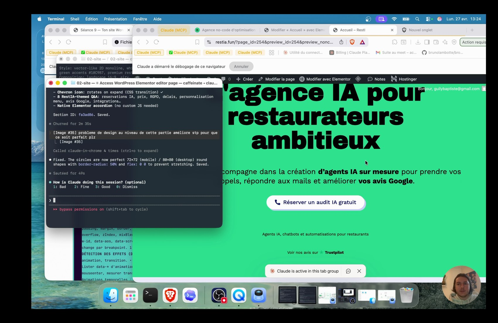
Checklist MCP
Claude Code lancé, Chrome MCP connecté, onglets source/éditeur/preview ouverts, connexion WordPress faite manuellement.
Teste une action simple.
L’agent pilote le navigateur.
Checklist prompt section
Capture, URL source, nom section, URL Elementor, URL preview, contexte projet.
| Point | Décision | Contrôle |
|---|---|---|
| Objectif | Prépare avant chaque section. | Le prompt est complet. |
| Risque | Aller trop vite | Revenir à une validation observable |
Checklist QA section
Desktop, tablette, mobile, images, boutons, hover, texte, sauvegarde.
Ne saute pas cette vérification. Si ce point est flou, la suite va coûter plus cher en corrections.
Ne valide pas sans QA.
Chaque section tient debout.
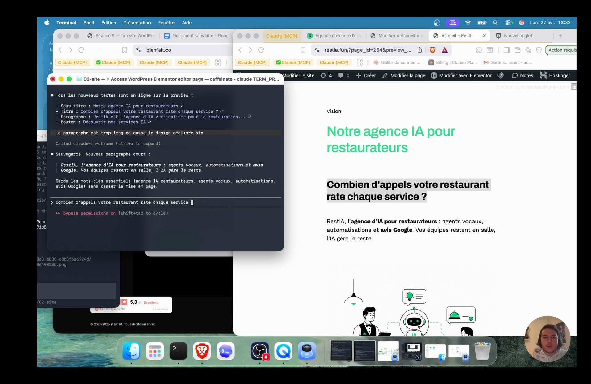
Checklist contenu
Textes adaptés à ton audit, cible claire, services concrets, FAQ utile, CTA répété.
Une action vague, un outil ouvert, et beaucoup d'incertitude.
La page parle à ton marché.
Supprime le texte générique.
Checklist global
Navbar, footer, liens, pages, accueil assignée, navigation privée.
- Je prépare le contexte.
- Je lance une action précise.
- Je vérifie dans l'interface réelle.
- Je corrige seulement ce qui bloque.
Teste comme un visiteur externe.
Le site est utilisable.
Erreur fréquente 1
Lancer une page entière d’un coup. C’est séduisant, mais tu perds le contrôle.
Si tu ne peux pas expliquer cette étape en une phrase, reviens au dernier écran stable et vérifie l'URL, l'outil ouvert et l'objectif de la section.
Reviens à la section par section.
Les erreurs deviennent petites.
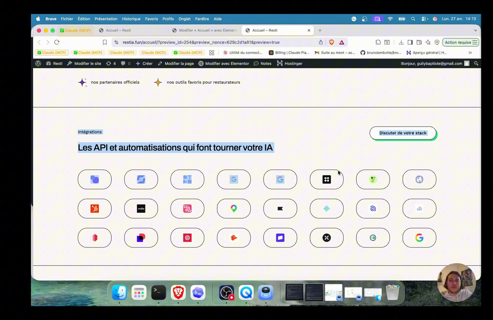
“Garder les images source. Ce n’est pas propre et ça rend le site moins crédible.”
Erreur fréquente 2
Remplace par tes assets.
Le site devient original.
Fais un audit final de mon site WordPress.
Vérifie : page Accueil, page Solution, page Contact, navbar, footer, responsive, liens, performance perçue, textes, images, CTA, cohérence avec l'audit SEO.
Donne-moi une liste courte de corrections classées par priorité, puis corrige les problèmes simples directement.Erreur fréquente 3
Valider sur desktop uniquement. La moitié des visiteurs arrive mobile.
Valider sur desktop uniquement. La moitié des visiteurs arrive mobile.
Vérifie toujours mobile.
Tu évites les pages cassées.
La suite logique
Après Accueil, je crée Solution, Contact, puis je prépare le blog et les pages SEO depuis la stratégie.
Répète la méthode, ne change pas de système.
Tu passes d’une page à un site complet.